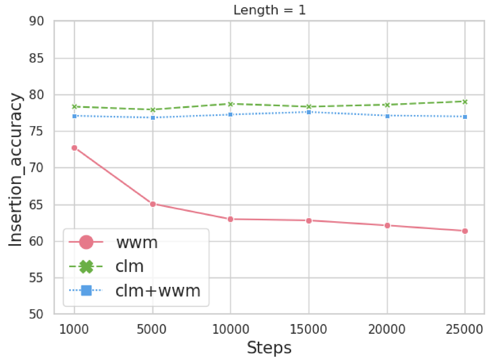

I got my Ph.D. degree from UESTC in Chengdu, mentored by Zenglin Xu
. My research interests mainly focus on how to
pre-train and finetune language models to perform understanding tasks and generation tasks. Recently,
I am also curious about multi-modality processing.
News
2022.12 | We released our paper "When Federated Learning Meets Pre-trained Language Models' Parameter-Efficient Tuning Methods".
2022.10 | Our paper "Leveraging Only the Category Name for Aspect Detection through Prompt-based Constrained Clustering" is accepted to Findings of EMNLP 2022.
2022.08 | We released our technique report "Effidit: Your AI Writing Assistant".
2022.05 | We released our multimodal data processing paper "One model, multiple modalities: A sparsely activated approach for text, sound, image, video and code".
2022.08 | We released our paper "Pretraining Chinese BERT for Detecting Word Insertion and Deletion Errors".
2022.03 | We released our paper "MarkBERT: Marking Word Boundaries Improves Chinese BERT".
2022.03 | Our paper "Is Whole Word Masking Always Better for Chinese BERT?": Probing on Chinese Grammatical Error Correction" is accepted to Findings of ACL 2022.
2022.03 | Our paper "Exploring and Adapting Chinese GPT to Pinyin Input Method" is accepted to ACL 2022.
2022.01 | Our paper "Graph fusion network for text classification" is accepted to KBS.
2021.09 | Our paper "Unsupervised sentiment analysis by transferring multi-source knowledge" is accepted to CC.
2020.10 | Our paper "Contextualize knowledge bases with transformer for end-to-end task-oriented dialogue systems" is accepted to EMNLP 2021 (Oral).
2020.04 | Our paper "Adversarial training based multi-source unsupervised domain adaptation for sentiment analysis" is accepted to AAAI 2020.
Publications --- pretrain techniques

"Is Whole Word Masking Always Better for Chinese BERT?": Probing on Chinese Grammatical Error Correction
05/21 - Now: Research Intern and Researcher, Tencent AI Lab
11/20 - 04/21: Visiting student, Westlake University
09/19 - 10/20: Research Intern, Microsoft STCA nlpg
09/18 - 08/19: Project leader, cooperation project with Nuance